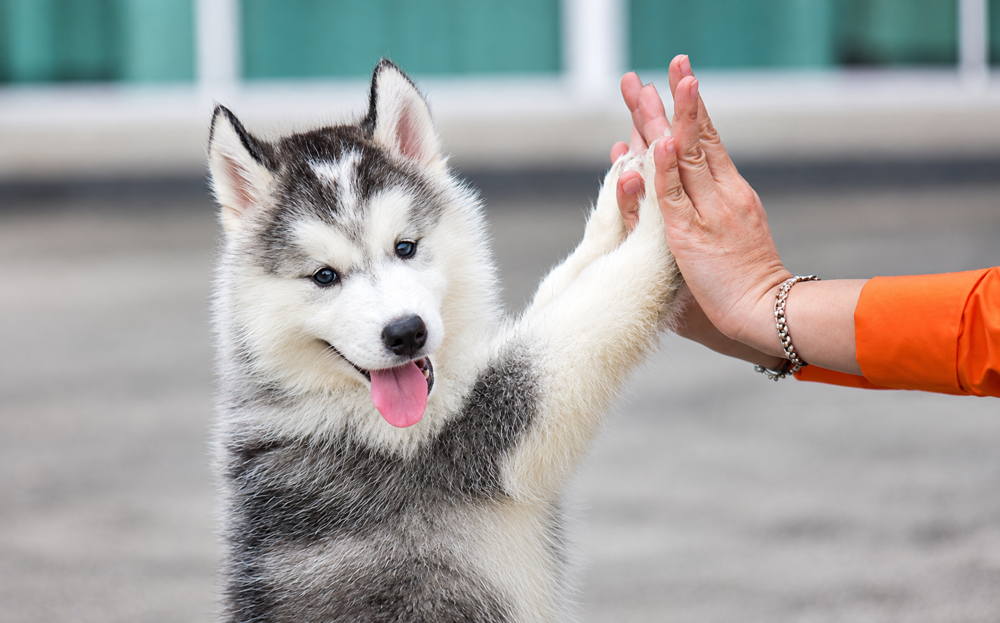

Cuidando com carinho do seu pet
Atendimento veterinário especializado, consultas
e exames para o bem-estar do seu amigo.
Proteção completa para cães e gatos.

Check-ups completos para prevenir e cuidar do seu amigo.

Ortopedia, Dermatologia e Nutrição animal.

Na VetCare, acreditamos que cuidar de um pet significa oferecer carinho, segurança e qualidade de vida em todos os momentos.
Oferecemos atendimento veterinário especializado e preventivo, com uma equipe altamente qualificada e preparada para cuidar do seu pet com atenção, respeito e dedicação.
Localizado no coração do Rio de Janeiro, o VetCare nasceu com a missão de transformar o cuidado animal em uma experiência de carinho, respeito e excelência. Mais do que um simples pet shop, nosso espaço foi planejado para ser um verdadeiro refúgio de bem-estar para o seu companheiro de quatro patas.
Nossa infraestrutura moderna e aconchegante combina atendimento veterinário de ponta com um serviço completo de estética animal. Oferecemos consultas preventivas, vacinação, exames, banho e tosa, sempre utilizando produtos hipoalergênicos e de primeira linha.
Cuidado individualizado e adaptado às necessidades de cada pet.
Veterinária, estética animal e produtos selecionados em um só lugar.
Produtos de qualidade e ambientes pensados para o bem-estar animal.

Em situações de emergência, cada segundo conta. Nossa equipe está preparada para oferecer atendimento rápido, seguro e especializado.